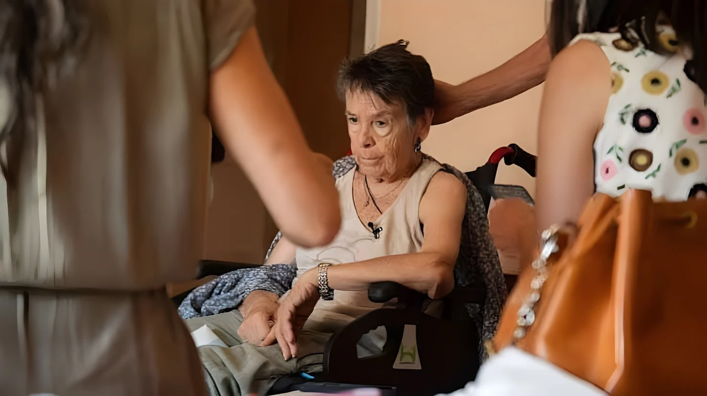

Maricarmen Abascal, 87 ans, est morte le mercredi 7 octobre 2026 à l'hôpital Gregorio Marañón de Madrid, quatorze jours après son expulsion de l'appartement où elle vivait depuis plus de soixante-dix ans. Un accord lui permettant d'y revenir avait été conclu le 29 septembre ; il est arrivé trop tard, selon le Syndicat des locataires. Des milliers de personnes ont défilé le 8 octobre de la Puerta del Sol jusqu'à son domicile, et sa mort s'invite dans la campagne des législatives anticipées du 29 novembre, entre deuil national et querelle politique.
Maricarmen Abascal est morte le mercredi 7 octobre 2026 à l'hôpital Gregorio Marañón de Madrid, où elle était hospitalisée depuis son expulsion, le 23 septembre, dont nous avons raconté les suites législatives. L'annonce a été faite par le Syndicat des locataires de Madrid, dans un communiqué cosigné par sa famille et son avocate, Beatriz Duro, qui a confirmé la nouvelle à la radio Cadena SER. Ni la famille ni l'hôpital n'ont rendu publique la cause du décès : l'état de santé de l'octogénaire, en fauteuil roulant, s'était dégradé, mais aucune source médicale ne précise de quoi elle est morte.
Maricarmen, handicapée à 50 %, vivait depuis plus de sept décennies dans un appartement de la calle Alcalde Sainz de Baranda, dans le quartier de Retiro. Le 23 septembre, des policiers avaient dégagé la rue et l'avaient évacuée sur un brancard, sous les caméras, après le rachat de l'immeuble par la société Urbagestión. Ces images ont déclenché des manifestations dans tout le pays.
Le 29 septembre, une médiation de l'entreprise municipale du logement (EMVS) avait abouti à un nouveau bail de huit ans, avec un loyer plafonné à 30 % de ses revenus nets, soit environ 435 euros par mois, contre les 2 650 euros que réclamait le propriétaire. Le Syndicat des locataires a regretté que cette solution « historique » arrive « trop tard » et qu'il ait fallu un processus aussi éprouvant pour une situation évitable. Depuis son lit d'hôpital, Maricarmen avait dit vouloir que son histoire serve aux autres : « Je n'ai pas pu sauver ma maison, mais je me bats pour que d'autres puissent le faire. »
| Loyer mensuel de Maricarmen | Montant |
|---|---|
| Réclamé par Urbagestión | 2 650 € |
| Accord du 29 septembre (≤ 30 % des revenus) | ≈ 435 € |
| Avant la hausse | ≈ 500 € |
Dès l'annonce, le campement installé depuis une dizaine de jours sur la Puerta del Sol s'est transformé en veillée : bougies, fleurs et pancartes ont été disposées devant la Real Casa de Correos. Après une minute de silence, plusieurs centaines de personnes ont marché dans la nuit jusqu'au Congrès des députés, où l'on a lu un manifeste et des poèmes de Rafael Alberti. Le lendemain, jeudi 8 octobre, une marche convoquée par le Syndicat des locataires est partie de Sol à 20 heures jusqu'à l'immeuble de Maricarmen : la Délégation du gouvernement a compté 20 000 participants. « Le meilleur hommage est de continuer la lutte », répétaient les campeurs.
Marche de la Puerta del Sol jusqu'au domicile de Maricarmen : 20 000 participants selon la Délégation du gouvernement.
Mort de Maricarmen à l'hôpital Gregorio Marañón.
Pedro Sánchez dissout les Cortes : élections le 29 novembre.
Le Congrès rejette les deux décrets sur le logement.
Accord de retour à son domicile ; adoption en Conseil des ministres de deux décrets-lois.
Grande manifestation à Madrid, puis campement sur la Puerta del Sol.
Expulsion de Maricarmen, évacuée sur un brancard.
Le cas de Maricarmen a donné un visage à une réalité que les statistiques décrivent : le loyer moyen a presque doublé en dix ans en Espagne, et, selon le gouvernement, 26 % des locataires consacrent en moyenne 40 % de leurs revenus au loyer et aux charges, contre 18 % en moyenne dans l'Union européenne.
« Quiero que lo que me ha pasado a mí sirva para que no les pase a otras personas. »
— Maricarmen, dans une vidéo du Syndicat des locataires de Madrid, 26 septembre 2026 (traduction : « Je veux que ce qui m'est arrivé serve à ce que cela n'arrive pas à d'autres. »)Le Premier ministre, Pedro Sánchez, a présenté ses condoléances sur X, et le ministre de la Justice, Félix Bolaños, a parlé d'« un symbole d'une cause juste ». À gauche, le ton est plus dur : Ione Belarra et Irene Montero ont écrit que « ce n'est pas une mort, c'est un assassinat », Gabriel Rufián (ERC) a lâché une injure sur X, et le Syndicat des locataires affirme que « le rentisme tue ». Le chef du Parti populaire, Alberto Núñez Feijóo, a demandé de ne pas politiser l'événement, tandis que la présidente de la région de Madrid, Isabel Díaz Ayuso, a rappelé qu'un hôpital public l'avait accompagnée jusqu'au bout. Vox a accusé Sánchez d'être responsable ; son eurodéputé Hermann Tertsch a réclamé une autopsie, sans apporter de preuve d'irrégularité.
Le Sénat, la mairie et l'Assemblée de Madrid ont refusé une minute de silence. L'ancien chef du gouvernement Felipe González a regretté un « usage partisan » du sujet, tout en disant : « si seulement il avait pu être évité ».
Le 2 octobre, le Congrès a rejeté les deux décrets-lois adoptés après l'expulsion. Le premier, sur les expulsions et la régulation des loyers, est tombé avec les voix de 137 députés du PP, 33 de Vox, 7 de Junts et d'un élu d'UPN. Le second, qui prévoyait la reconduction indéfinie des baux, a été rejeté par 184 voix contre 166, le PNV et Coalition canarienne votant aussi non. La ministre du Logement, Isabel Rodríguez, s'est dite « très déçue ». Trois jours plus tard, Sánchez a dissous les Cortes, comme nous l'avons raconté dans notre article sur la dissolution.
| Décret du 2 octobre | Résultat |
|---|---|
| Décret 1 : expulsions, loyers | Rejeté (PP, Vox, Junts, UPN) |
| Décret 2 : baux indéfinis | Rejeté, 184 contre 166 |
Le même baromètre du CIS donne le PSOE vainqueur, mais le PP et Vox cumuleraient la majorité. Miguel Tellado dirigera la campagne du PP et María Jesús Montero celle du PSOE. Les syndicats CCOO et UGT, à l'appel du Syndicat des locataires, ont par ailleurs convoqué une grève générale pour le logement le 11 novembre.
La mort de Maricarmen révèle comment un fait divers devient un symbole : une image, celle d'une femme âgée emportée sur un brancard, suffit à cristalliser des années de colère diffuse et à faire basculer un calendrier politique. Mais un symbole échappe à ceux qu'il incarne. La gauche y voit la preuve que « le rentisme tue », la droite dénonce une récupération et rappelle que la cause de la mort n'est pas établie.
Au-delà des postures, ce que l'affaire dit reste simple : les décrets censés répondre à son expulsion ont été rejetés par ceux-là mêmes qui s'étaient dits touchés par son sort. Entre un deuil national et un scrutin à six semaines, la question du logement a cessé d'être un sujet technique pour devenir un critère de vote.
Maricarmen Abascal, de 87 años, murió el miércoles 7 de octubre de 2026 en el hospital Gregorio Marañón de Madrid, catorce días después de su desahucio del piso donde vivía desde hacía más de setenta años. El 29 de septiembre se había alcanzado un acuerdo que le permitía volver; llegó demasiado tarde, según el Sindicato de Inquilinas. Miles de personas marcharon el 8 de octubre desde la Puerta del Sol hasta su casa, y su muerte entra en la campaña de las elecciones generales anticipadas del 29 de noviembre, entre el duelo nacional y la polémica política.
Maricarmen Abascal murió el miércoles 7 de octubre de 2026 en el hospital Gregorio Marañón de Madrid, donde estaba ingresada desde su desahucio, el 23 de septiembre, cuyas consecuencias legislativas ya contamos. El anuncio lo hizo el Sindicato de Inquilinas de Madrid, en un comunicado firmado también por su familia y su abogada, Beatriz Duro, que confirmó la noticia a la Cadena SER. Ni la familia ni el hospital han hecho pública la causa del fallecimiento: el estado de salud de la anciana, que se desplazaba en silla de ruedas, se había deteriorado, pero ninguna fuente médica precisa de qué murió.
Maricarmen, con una discapacidad del 50 %, vivía desde hacía más de siete décadas en un piso de la calle Alcalde Sainz de Baranda, en el barrio de Retiro. El 23 de septiembre, agentes de policía despejaron la calle y la sacaron en camilla, ante las cámaras, tras la compra del edificio por la sociedad Urbagestión. Esas imágenes desencadenaron manifestaciones en todo el país.
El 29 de septiembre, una mediación de la Empresa Municipal de la Vivienda y Suelo (EMVS) había desembocado en un nuevo contrato de ocho años, con un alquiler limitado al 30 % de sus ingresos netos, unos 435 euros al mes, frente a los 2 650 euros que reclamaba la propiedad. El Sindicato de Inquilinas lamentó que esa solución «histórica» llegara «demasiado tarde» y que hiciera falta un proceso tan duro para una situación evitable. Desde su cama de hospital, Maricarmen había dicho que quería que su historia sirviera a otros: «No pude salvar mi casa, pero lucho para que otros puedan hacerlo» (traducción).
| Alquiler mensual de Maricarmen | Importe |
|---|---|
| Reclamado por Urbagestión | 2 650 € |
| Acuerdo del 29 de septiembre (≤ 30 % de ingresos) | ≈ 435 € |
| Antes de la subida | ≈ 500 € |
En cuanto se conoció la noticia, la acampada instalada desde hacía unos diez días en la Puerta del Sol se convirtió en un velatorio: velas, flores y pancartas ante la Real Casa de Correos. Tras un minuto de silencio, varios cientos de personas marcharon de noche hasta el Congreso de los Diputados, donde se leyeron un manifiesto y poemas de Rafael Alberti. Al día siguiente, jueves 8 de octubre, una marcha convocada por el Sindicato de Inquilinas salió de Sol a las 20:00 hasta el portal de Maricarmen: la Delegación del Gobierno contó 20 000 participantes. «El mejor homenaje es seguir la lucha», repetían los acampados.
Marcha desde la Puerta del Sol hasta la casa de Maricarmen: 20 000 participantes según la Delegación del Gobierno.
Muere Maricarmen en el hospital Gregorio Marañón.
Pedro Sánchez disuelve las Cortes: elecciones el 29 de noviembre.
El Congreso tumba los dos decretos de vivienda.
Acuerdo para que vuelva a su casa; el Consejo de Ministros aprueba dos decretos-ley.
Gran manifestación en Madrid y acampada en la Puerta del Sol.
Desahucio de Maricarmen, sacada en camilla.
El caso de Maricarmen ha dado un rostro a una realidad que describen las estadísticas: el alquiler medio casi se ha duplicado en diez años en España y, según el Gobierno, el 26 % de los inquilinos dedica de media el 40 % de sus ingresos al alquiler y los suministros, frente al 18 % de media en la Unión Europea.
«Quiero que lo que me ha pasado a mí sirva para que no les pase a otras personas.»
— Maricarmen, en un vídeo del Sindicato de Inquilinas de Madrid, 26 de septiembre de 2026El presidente del Gobierno, Pedro Sánchez, expresó sus condolencias en X y el ministro de Justicia, Félix Bolaños, habló de «un símbolo de una causa justa». En la izquierda el tono es más duro: Ione Belarra e Irene Montero escribieron que «no es una muerte, es un asesinato», Gabriel Rufián (ERC) soltó un insulto en X y el Sindicato de Inquilinas afirma que «el rentismo mata». El líder del Partido Popular, Alberto Núñez Feijóo, pidió no politizar el suceso, mientras que la presidenta de la Comunidad de Madrid, Isabel Díaz Ayuso, recordó que un hospital público la acompañó hasta el final. Vox acusó a Sánchez de ser responsable; su eurodiputado Hermann Tertsch pidió una autopsia, sin aportar pruebas de irregularidades.
El Senado, el Ayuntamiento y la Asamblea de Madrid rechazaron un minuto de silencio. El expresidente Felipe González lamentó un «uso partidista» del tema, aunque dijo: «ojalá se pudiera haber evitado».
El 2 de octubre, el Congreso rechazó los dos decretos-ley aprobados tras el desahucio. El primero, sobre desahucios y regulación de alquileres, cayó con los votos en contra de 137 diputados del PP, 33 de Vox, 7 de Junts y uno de UPN. El segundo, que preveía la prórroga indefinida de los alquileres, fue rechazado por 184 votos contra 166, con el PNV y Coalición Canaria también en contra. La ministra de Vivienda, Isabel Rodríguez, se dijo «muy decepcionada». Tres días después, Sánchez disolvió las Cortes, como contamos en nuestro artículo sobre la disolución.
| Decreto del 2 de octubre | Resultado |
|---|---|
| Decreto 1: desahucios, alquileres | Rechazado (PP, Vox, Junts, UPN) |
| Decreto 2: contratos indefinidos | Rechazado, 184 contra 166 |
El mismo barómetro del CIS da la victoria al PSOE, pero PP y Vox sumarían mayoría. Miguel Tellado dirigirá la campaña del PP y María Jesús Montero la del PSOE. Los sindicatos CCOO y UGT, a petición del Sindicato de Inquilinas, han convocado además una huelga general por la vivienda el 11 de noviembre.
La muerte de Maricarmen muestra cómo un suceso se vuelve símbolo: una imagen, la de una anciana sacada en camilla, basta para cristalizar años de enfado difuso y alterar un calendario político. Pero un símbolo se escapa de quienes lo encarnan. La izquierda ve en él la prueba de que «el rentismo mata»; la derecha denuncia una instrumentalización y recuerda que la causa del fallecimiento no está establecida.
Más allá de las posturas, lo que dice el caso es sencillo: los decretos que debían responder a su desahucio fueron rechazados por quienes se habían dicho conmovidos por su suerte. Entre un duelo nacional y unas elecciones a seis semanas, la vivienda ha dejado de ser un tema técnico para convertirse en un criterio de voto.